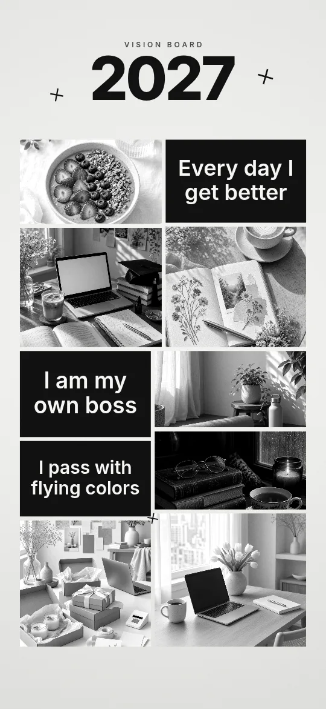

2027 GOALS LIST
120 goal ideas for 2027, by life area
Stuck on New Year’s goals? Here are 120 specific ideas across 12 areas of life, small enough to start in January and clear enough to check off in December.



Use this list to pick one goal per life area. Choose 4–7 areas, and that is your 2027 vision board. Each category has a one-tap link that builds a lock screen with it.
Money goals
- Save a 6-month emergency fund
- Pay off one credit card
- Invest every month
- Open a high-yield savings account
- Track spending for 90 days
- Earn $1,000 from a side hustle
- Max out a retirement account
- Make a no-buy month
- Negotiate one bill down
- Buy something expensive with cash
Make a board with money goals →
Career goals
- Get promoted
- Change to a job you love
- Ask for a raise
- Learn one high-value skill
- Build a portfolio site
- Speak at an event
- Find a mentor
- Take a real vacation from work
- Start freelancing
- Finish a certification
Make a board with career goals →
Health goals
- Strength train 3× a week
- Run a 10K
- Walk 8,000 steps a day
- Sleep 8 hours
- Cook at home 5 nights a week
- Drink 2L of water daily
- Try pilates
- Do a yearly check-up
- Cut back on alcohol
- Stretch every morning
Make a board with health goals →
Love & friends goals
- Monthly date nights
- Plan a friends trip
- Host a dinner party
- Call family every week
- Write 12 handwritten letters
- Make two new friends
- Celebrate every birthday properly
- Set one healthy boundary
- Plan a surprise for someone
- Go to a wedding or reunion you would skip
Make a board with love & friends goals →
Self-care goals
- A phone-free morning
- Journal 3× a week
- Therapy or coaching
- A monthly solo date
- A skincare routine you keep
- Take a social media break
- Learn to meditate
- Say no more often
- Spa day each season
- Read before bed
Make a board with self-care goals →
Growth goals
- Read 24 books
- Learn a language to A2
- Take a class for fun
- Write every day for 30 days
- Finish a creative project
- Learn to drive
- Do one scary thing a month
- Volunteer
- Start a podcast or blog
- Learn an instrument
Make a board with growth goals →
Home goals
- Move to a place you love
- Declutter every room
- Plants in every room
- Make your bedroom a sanctuary
- Learn 10 signature recipes
- Buy one piece of real furniture
- Start a garden
- Host the holidays
- Organize your digital life
- Get a pet
Make a board with home goals →
Travel goals
- Take a solo trip
- Visit a new country
- See the northern lights
- A Mediterranean summer
- A winter cabin weekend
- Road trip with friends
- Visit Japan in cherry blossom season
- A weekend in Paris
- Swim in the sea
- Go somewhere with no Wi-Fi
Make a board with travel goals →
Style & glam goals
- Build a capsule wardrobe
- Find your signature scent
- Learn your colors
- Buy one investment bag
- Get a great haircut
- Wear the dress, not just save it
- A professional photoshoot
- Learn soft-glam makeup
- Shop secondhand first
- Dress for the life you want
Make a board with style & glam goals →
Business goals
- Launch the business
- Get the first 100 customers
- Make your first $10k
- Build an email list
- Post content every week
- Hire your first helper
- Set up a simple website
- Pitch 20 clients
- Sell a digital product
- Take a business course
Make a board with business goals →
Study goals
- Graduate
- Get straight As this semester
- Pass the big exam
- Apply to grad school
- Study abroad
- Study 2 hours daily
- Finish the thesis
- Learn to code basics
- Join a study group
- Build a study routine
Make a board with study goals →
Peace goals
- Meditate 10 minutes daily
- A digital sunset at 9pm
- Spend time in nature weekly
- Gratitude journal
- Let go of a grudge
- Take a mental health day each month
- Breathwork before bed
- Simplify your calendar
- Retreat weekend
- Slow mornings on weekends
Make a board with peace goals →
FAQ
How many goals should I set for 2027?
Most people do best with 4–7, one per life area. More than that and none get your full attention.
How do I remember my goals all year?
Put them where you look every day: your phone lock screen. Review them each quarter with a printable checklist.
Glowboard is a free vision board wallpaper maker. There is no sign-up, and your photos never leave your device.